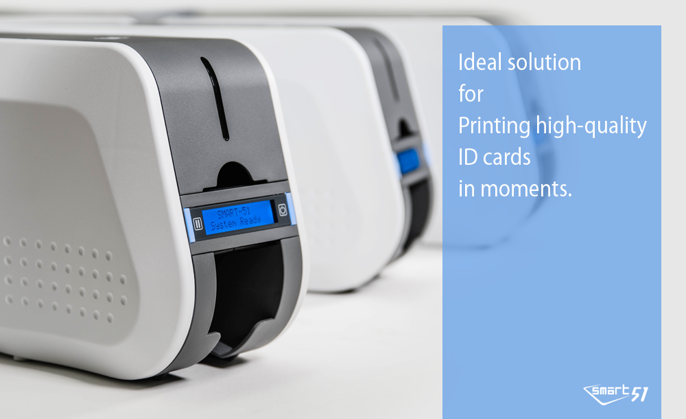

아이디피(주)의 SMART Series는 효율성 극대화를 위한 최적의 설계를 통해 개발 된 열 승화 (Dye-Sublimation) 방식의 직전사 ID 카드 프린터 입니다. 선명한 인쇄 품질의 The Enhanced FINE™ Imaging Technology 가 적용된 SMART ID Card Printer Series는 각종 신분증, 멤버쉽 카드, 출입증, 각종 자격증 및 등록증, 병원 진료 카드 등 다양한 카드 발급을 요구하는 환경에 맞춰 뛰어난 편의성 및 효율성을 제공 합니다. SMART Series 는 단면 및 양면 카드 인쇄, Re- Writable, 강력한 보안 기능을 추가한 카드 라미네이팅, 다양한 인코딩 모듈 (모든 종류의 접촉 및 비 접촉 방식 스마트 카드, 마그네틱 카드 등)을 지원하여, 사용 하고자 하는 환경에 맞는 카드 프린터를 쉽고 편리하게 선택할 수 있도록 다양한 라인업을 보유하고 있습니다.
국내 최초 ID 카드 프린터를 개발한 아이디피(주)는 앞선 기술과 신뢰를 바탕으로 Total ID Card Printing Solution을 제공하고 있습니다.
